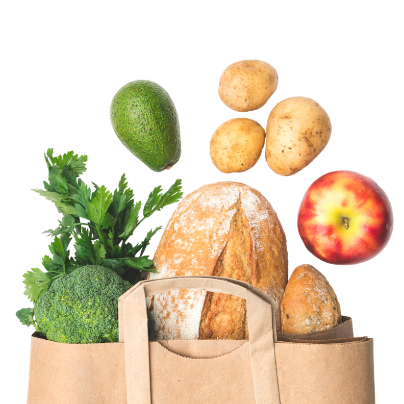

Our Mission
To ensure members of the University of Michigan community—whether on a tight budget or physically restrained from getting to a grocery store—receive equitable access to healthy, nutritious, and nourishing food and the ability to prepare it for themselves or others.
What We Provide
- Food: Produce, dairy, meat, bread, frozen and shelf-stable foods (i.e. rice, cans, tuna, etc.)
- Kitchen and Cooking: Dishes, silverware, pots & pans, Tupperware, cutting boards, knives, and other kitchenware
- Personal & Household: Trash bags, toilet paper, cleaning supplies, hygiene products, school supplies, baby items and more
- Support: Get connected to campus experts like CAPS, Dean of Students and Financial Aid, as well as SNAP (Michigan’s food program)
News
Fall 2024 Mobile Distribution for North Campus

U-M’s Maize & Blue Cupboard (MBC), the College of Engineering, Student Life, and Ann Arbor-based Food Gatherers will host North Campus mobile food distributions to make MBC resources more accessible for North Campus residents. The mobile distribution takes place in the connector hallway between the Duderstadt Media Library and Pierpont Commons.
We suggest participants bring a reusable bag or another method to carry groceries.
The North Campus mobile food distributions will take place during the following dates. No reservation is required. Food will be distributed from 2pm to 4pm or until supplies run out.
- Tuesday, September 24
- Tuesday, October 8
- Tuesday, October 22
- Tuesday, November 19
- Tuesday, December 3
The initial idea for the North Campus Distribution pilot originated through the COVID Campus Challenge, sponsored by the College of Engineering and Student Life. Students were charged with developing resource ideas to support students during the pandemic.
Hours
- Sunday: 2pm - 6pm
- Monday - Thursday: 3pm - 7pm
- Friday: 12pm - 7pm
- Saturday: closed
Location
Located in the basement of the Betsy Barbour Residence Hall, please enter via the Maynard entrance only to ensure privacy for residents. Please contact us if you need ramp or elevator access.
- Address: 420 S State St Ann Arbor, MI 48109
- Phone: 734-936-2794